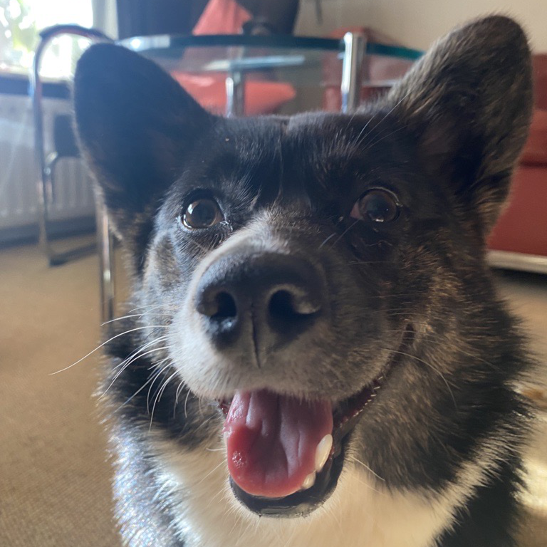
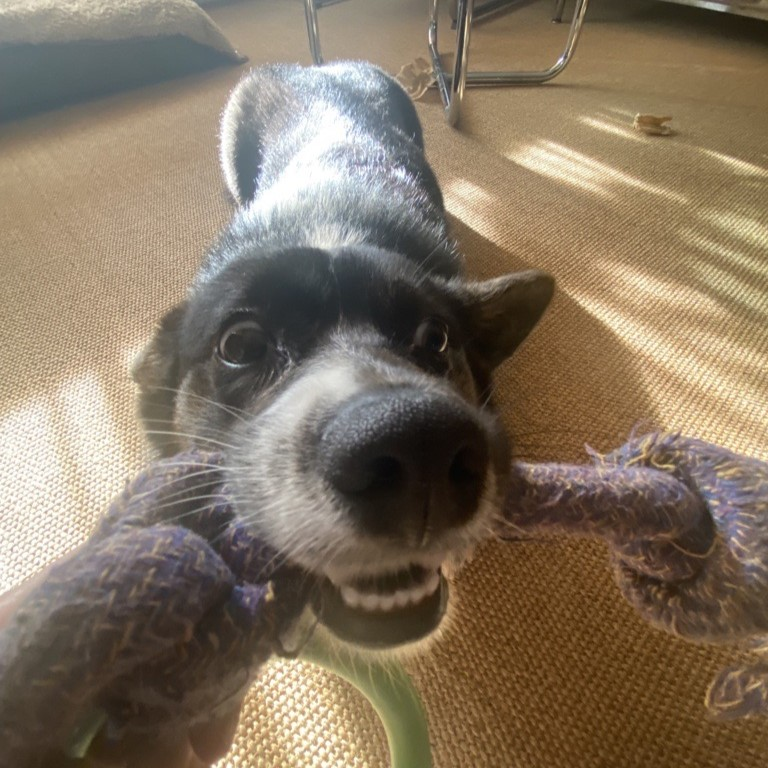
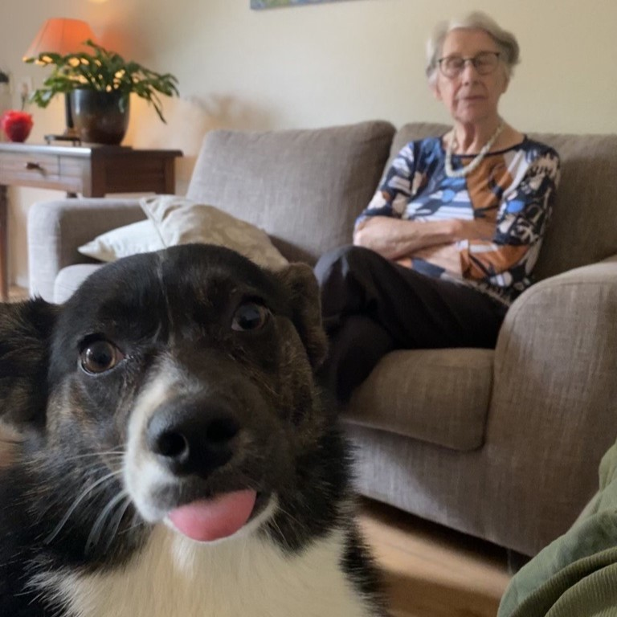
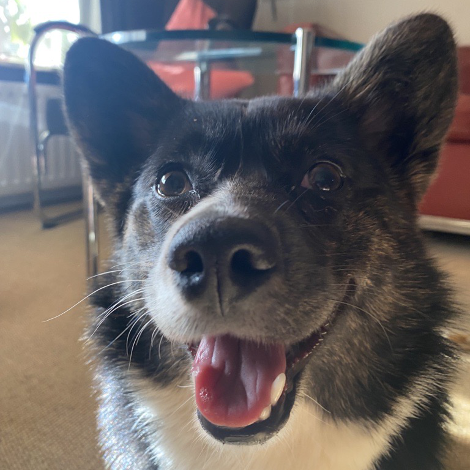
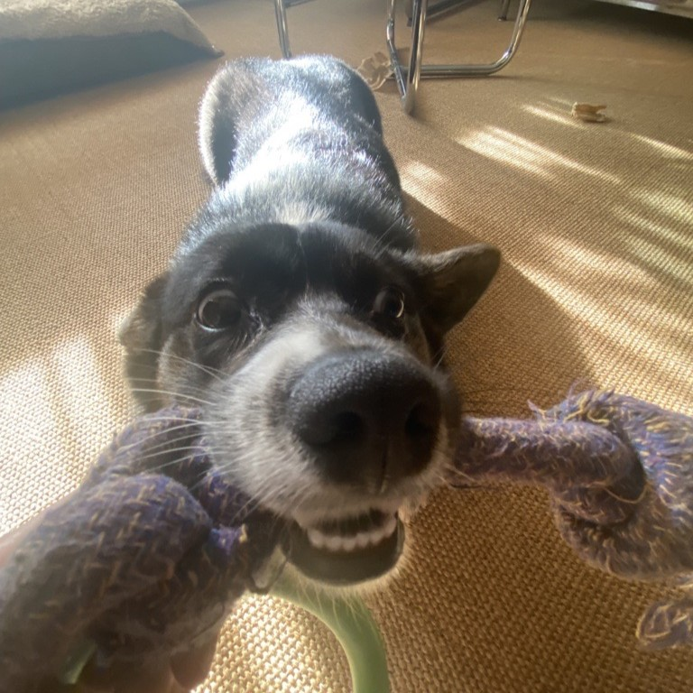
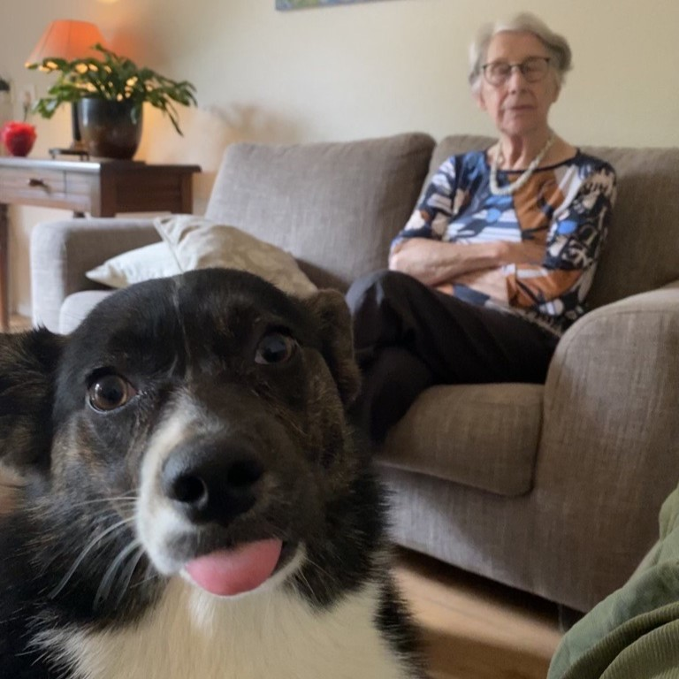

Mijn Corgi.
Natuurlijk maak ik niet zomaar een website over Corgi's. Ik heb er zelf ook eentje. Ze is een Cardigan Welsh Corgi en ze is mijn baby'tje.
We kregen Pippy aan het begin van 2023. Kenissen van ons hadden een nestje en we konden het niet laten. We zijn 1 keer gaan kijken en waren meteen verlieft. Pip was het kleinste hondje uit het nest en het enige hondje met een zwart witte vacht. Ze keek heel zielig en verlegen. Het leek alsof ze ons smeekte om haar mee te nemen. Een paar weken later had mama haar in huis gehaald en hadden we een een nieuwe kleine vriend.
Schijn bedriegt. Na een paar dagen kwam Pip uit haar schelp. Ze was een super ondeugende puppy. Ze at alles wat ze zag: baby doekjes, rotte walnoten, paddestoelen, kauwgum, ze beet op je voeten en nog veel meer. De eerste 3 maanden moesten al 3 keer naar de dierenarts en ook ik zelf moest langs de huisart om een tetanus vaccinatie te halen. Ondangs al deze stress was Pip het aller schatigste hondje. Met iedere wandeling kreeg ze veel aandacht. Ze was super populair in de buurt.
Tegenwoordig is Pip al 1 jaar oud. Ze is nogsteeds super ondeugend, maar ook een schatje. Ze houd van knuffelen op de bank en spelen met andere hondjes. Ik kan me geen leven meer voorstellen zonder haar.
 




